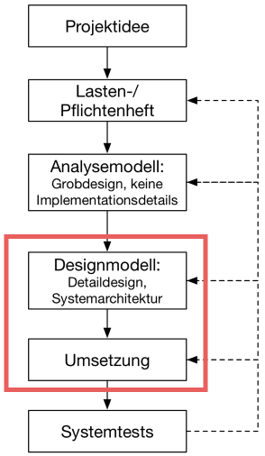
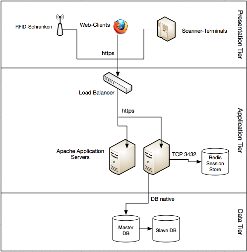
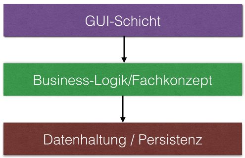
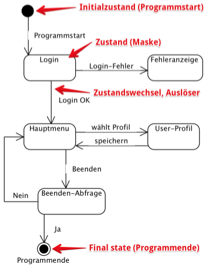

{% extends "../_base_template.html" %}
{% block title %}Lektion 6 - Einführung OOD, Maskenablauf mit State-Machine-Diagrammen{% endblock %}

{% block sections %}
<section data-markdown class="bigger-2">
<textarea data-template>
<i class="fas fa-graduation-cap"></i> OOD - Einführung
=============================

Heutiges Ziel
-------------

* Sie kennen die Ziele der Design-Phase (OOD)
* Sie können die Unterschiede zur Analyse-Phase benennen
* Sie kennen das Vorgehen zum Entwerfen des OOD-Modells
* Sie können einen UI-Maskenablauf mit UML State-Machine Diagrammen erstellen

### Hausaufgaben

* UML State Machine-Diagramm des Maskenablaufs

</textarea>
</section>

<section data-markdown data-separator-notes="^Note:" class="bigger-2">
<textarea data-template>
<i class="fas fa-flask"></i> Wo stehen wir?
===========

Wir gelangen nun zum Design-Modell - die technische Definition unserer Software.

Dieses Kapitel geht Hand in Hand mit der Implementation - wir beginnen in diesem Kapitel
bereits mit technischen Implementationen.


</textarea>
</section>


<section data-markdown data-separator-notes="^Note:">
<textarea data-template>
<i class="fas fa-flask"></i> Objektorientiertes Design
===========

**Zur Erinnerung**: In der Design-Phase werden die technischen Aspekte unseres Systems definiert. **Doch welche sind dies?**

<div style="width: 47%; float:left; padding:5px; background-color: rgb(49,123,168);color: white; margin: 5px" class="fragment">
    <h2 style="color:white">System- und Software-Architektur</h2>
    <ul>
        <li>System-Architektur: Web (3-Tier), Client/Server, Standalone, App ...</li>
        <li>Software-Architektur</li>
        <li>Wahl der Plattform: OS, Cloud, Verteilung... </li>
        <li>Wahl der Programmiersprache(n)</li>
        <li>Wahl des GUI-Systems / Frameworks</li>
        <li>Wahl der Datenhaltung / Datenbank / Framework</li>
    </ul>
</div>

<div style="width:47%;float:left; padding:5px; background-color: rgb(49,145,66);color: white; margin: 5px" class="fragment">
    <h2 style="color:white">Entwurf der Fachkonzeptschicht</h2>
    <ul>
        <li>überführen des Analyse-Modells in das Design-Modell</li>
        <li>Einführen von technischen Klassen für Programmablauf, UI</li>
        <li>Verfeinern / Zusammenlegen des Klassenmodells</li>
        <li>Verfeinern von Attributen</li>
        <li>Verfeinern von Assoziationen / Containerklassen für
            Persistenz einführen</li>
    </ul>
</div>

<div style="width:47%;float:left; padding:5px; background-color: rgb(111,75,138);color: white; margin: 5px" class="fragment">
    <h2 style="color:white">Entwurf GUI-Schicht und Anbindung an Fachkonzept</h2>
    <ul>
        <li>Model/View/Controller-Pattern</li>
        <li>Programm- resp. Maskenablauf / Steuerung</li>
        <li>UI-Design</li>
    </ul>
</div>

<div style="width:47%;float:left; padding:5px; background-color: rgb(110,52,47);color: white; margin: 5px" class="fragment">
    <h2 style="color:white">Datenhaltung / Persistent</h2>
    <ul>
        <li>Objektrelationales Mapping (ORM)</li>
        <li>Datenzugriffe abstrahieren</li>
        <li>Persistenz-Code</li>
    </ul>
</div>


<!-- .element class="fragment" -->Software-Entwicklung ist eine komplexe Sache mit vielen Komponenten! Leider haben wir in diesem Modul zu wenig Zeit,
um alle Aspekte kennenzulernen.<br /><br />
Wir lernen mit **Design Patterns** technische Werkzeuge kennen, die uns bei der technischen Umsetzung all dieser
Komponenten helfen.

</textarea>
</section>

<section>
    <section data-markdown data-separator-notes="^Note:" class="bigger-2">
    <textarea data-template>
    <i class="fas fa-wrench"></i> System- und Software-Architektur
    ===========

    Zentral bei der Entwicklung eines Software-Systems ist die Wahl einer **Systemarchitektur** und einer **Software-Architektur**. Was bedeuten diese beiden Begriffe?

    * Bilden Sie 2 Gruppen.
    * Recherchieren Sie kurz einen der beiden Begriffe (Wikipedia, Internet)
    * Eine Gruppe definiert den Begriff **Systemarchitektur**:
      * Was ist damit gemeint? Erklären Sie dies kurz der anderen Gruppe anhand eines Beispieles!
    * Eine Gruppe definiert den Begriff **Softwarearchitektur**:
      * Was ist damit gemeint? Erklären Sie dies kurz der anderen Gruppe anhand eines Beispieles!


    </textarea>
    </section>


    <section data-markdown data-separator-notes="^Note:" class="bigger-2">
    <textarea data-template>
    <i class="fas fa-flask"></i> Was bedeutet Systemarchitektur?
    ===========

    Die **Systemarchitektur** definiert die einzelnen Komponenten eines Software-Produkts und deren Zusammenspiel: Es zeigt
    die Hardware-Komponenten, welche Aufgaben sie haben und was mit welcher Komponenten wie kommuniziert.

    Unser Bibliothekssystem könnte beispielsweise als so genannte **3-Tier-Web-Architektur** implementiert werden: Diese Architektur definiert 3 **Schichten** (Tiers), welche die Hardware-Komponenten aufgabengetrennt definiert:

    <div style="display: flex">
    
    <ul style="margin-left: 20px">
        <li>die <strong>Presentation Tier</strong> ist für das Frontend (z.B. Web-App) zuständig)</li>
        <li>die <strong>Application Tier</strong> beinhaltet die Business-Logik (Backend)</li>
        <li>die <strong>Data Tier</strong> kümmert sich um die Persistenz (Datenhaltung)</li>
    </ul>
    </div>
    </textarea>
    </section>

    <section data-markdown data-separator-notes="^Note:" class="bigger-2">
    <textarea data-template>
    <i class="fas fa-flask"></i> Was bedeutet Softwarearchitektur?
    ===========

    Die **Softwarearchitektur** definiert den "inneren Aufbau" der Software-Komponenten und deren Zusammenspiel.
    Dabei werden heute meist auch die Software-Komponenten nach einem **3-Schichten-Modell** aufgebaut:

    
    Jede Schicht "greift" nur **gegen unten** auf die andere Schicht zu: Jede untere Schicht **weiss nichts** von der oberen (Separation of Concerns, Trennung der Zuständigkeiten).<br /><br />In jeder Schicht definieren **Frameworks**, **Libraries** und **Design Pattern**
    die Software-Architektur.

    * **Frameworks** sind strukturierte Programmbibliotheken, die dem Programmierer einen bestimmten "Rahmen" vorschreiben (Bsp: Java Swing UI Framework)
    * **Libraries** sind Sammlungen von Programm(-teilen), die den Programmierer bestimmte Aufgaben abnehmen
    * **Design Pattern** sind nur Ideen, __Best Practices__, wie bestimmte Probleme gelöst werden können. Wir lernen ein paar dieser Design Pattern noch kennen.

    Note:
    Wir entwerfen (Design von OOD) in den nächsten Lektionen einen Teil einer Software-Architektur für unser
    Bibliothekssystem.

    </textarea>
    </section>
</section>

<section data-markdown data-separator-notes="^Note:" class="bigger-2">
<textarea data-template>
<i class="fas fa-flask"></i> Vorgehen in der Design- und Implementationsphase
===========

Bevor Sie mit dem eigentlichen Programmieren loslassen, will das Software-Design sauber geplant sein. Dazu hat sich
in der Design-Phase folgendes Vorgehen etabliert:

1. Festlegen der System- und Software-Architektur
2. Konzipieren der Fachkonzept-Schicht. Dazu gehört:
  * Konkretisieren des Klassenmodells: Ergänzen durch technische Klassen wie z.B. UI-Views, Persistenz-Zugriffe etc.
  * Vereinfachen / Konkretisieren von Hierarchien und Assoziationen
  * Finden von technischen Umsetzungs-Lösungen mittels **Design Patterns**
3. Entwurf des **GUI** und Anbindung an das Fachkonzept
4. Persistenz-Schicht entwerfen und Anbindung an Fachkonzept

Wir behandeln nur einen kleinen Teil all dieser Aufgaben. Wir beginnen mit der Ablaufplanung des UI und verwenden dazu das UML-Tool **State-Machine Diagramme**.

</textarea>
</section>

<section>
    <section data-markdown data-separator-notes="^Note:" class="bigger-2">
    <textarea data-template>
    <i class="fas fa-wrench"></i> UI-Maskenablauf mit State-Machine-Diagrammen planen
    ===========

    Einer der ersten (logischsten) Schritte ist die Planung des Maskenablaufs: Jedes Programm besteht aus **Masken**, oder **Bildschirmen**, oder auch **Webseiten**. Ganz gleich, wie diese Ansichten heissen, sie kommen in jedem Programm vor, und ist auch das, was der
    Anwender am Ende zu sehen bekommt.

    Der **Maskenablauf** definiert dabei NICHT das Aussehen, sondern nur den **Ablauf**: Welche Ansicht wird wann für welchen Zustand
    aufgerufen.

    Aufgrund Ihrer bisherigen Analyse (Use-Cases, Klassen etc) können Sie nun beginnen, für die verschiedenen Funktionen
    sinnvolle Masken-Abläufe zu planen.

    Wir verwenden dazu das UML-Diagramm **State Machine Diagramm** (s.u.). Es eignet sich gut, um Zustände und Zustandsübergänge in einem
    Programm festzuhalten.
    </textarea>
    </section>

    <section data-markdown data-separator-notes="^Note:" class="bigger-2">
    <textarea data-template>
    <i class="fas fa-flask"></i> Beispiel State-Machine-UML für Maskenablauf
    ===========

    
    * Ein "State" stellt hier eine Maske, eine View dar.
    * Eine "State Transition" stellt hier den Auslöser für einen Maskenwechsel dar (z.B. "Speichern"-Button)
    * Dieses Diagramm zeigt somit, welche Masken umzusetzen sind und wie man von einer Maske zur anderen kommt.

    </textarea>
    </section>
</section>

<section data-markdown data-separator-notes="^Note:" class="bigger-2">
<textarea data-template>
<i class="fas fa-wrench"></i> (Haus-)Aufgabe
===========

* Entwickeln Sie ein UML-State-Machine-Diagramm für unser fiktives Bibliothekssystem
* überlegen Sie sich den Maskenablauf für folgende Funktionalitäten:
  * Login an Weboberfläche
  * Anzeigen der ausgeliehenen Medien
  * Suche von ausleihbaren Medien
  * Reservieren von freien Medien
  * Verlängern von ausgeliehenen Medien
  * Ausloggen aus Weboberfläche
* überlegen Sie sich, wie die Masken zusammenhängen:
  * Welche Masken werden benötigt?
  * Wie gelangt man von einer Maske zur anderen?
  * Welches sind die Auslöser für die Maskenübergänge?
* Zeichnen Sie dazu ein **State Machine Diagramm** als UML.

Abgabe:

Das State Machine Diagramm als Bild
</textarea>
</section>
{% endblock %}
